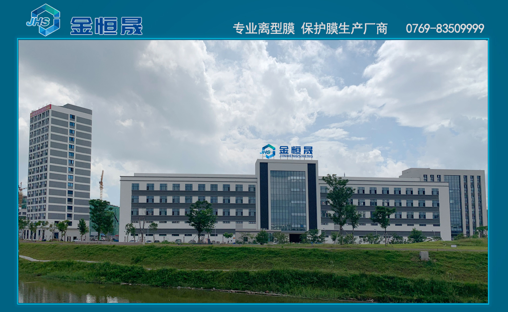
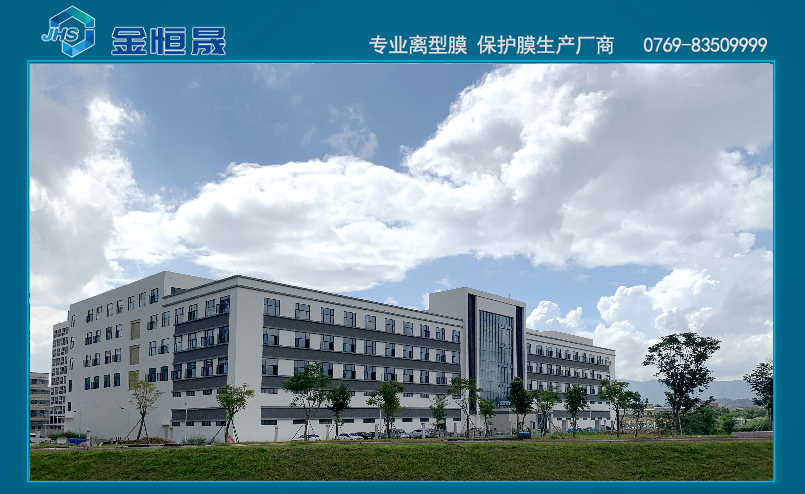

{% include 'base.html' %}
{% block input %}
{% endblock %}

{% block queryRow %}
<div >
    <div class="d-flex flex-column align-items-center">

        
        <hr>
        
        <br>
        
        <br>
        
    </div>
</div>
    


{% endblock %}
{% block container %}


{% endblock %}
<!-- 下方是打印区域 -->
{% block map %}

{% endblock %}


<script src="../static/js/print.js"></script>